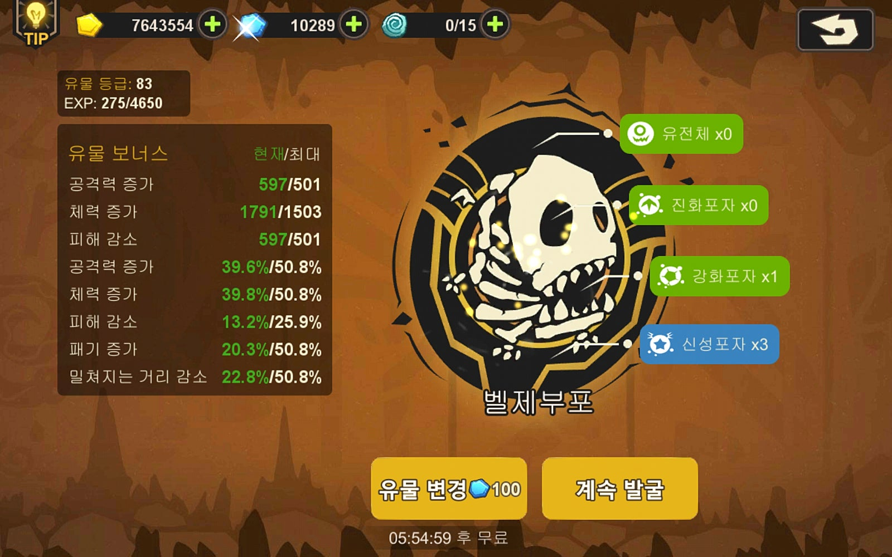
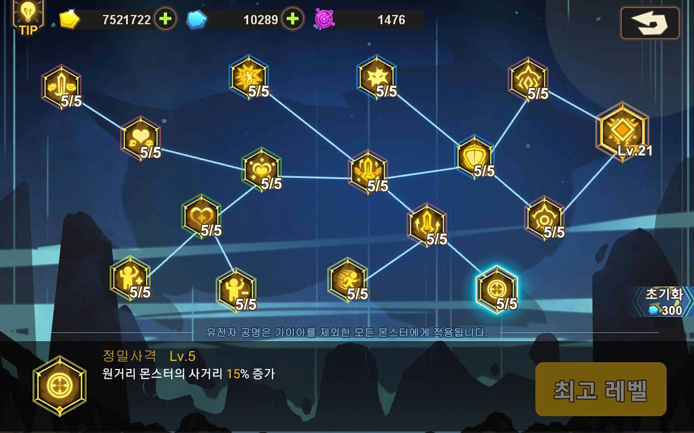
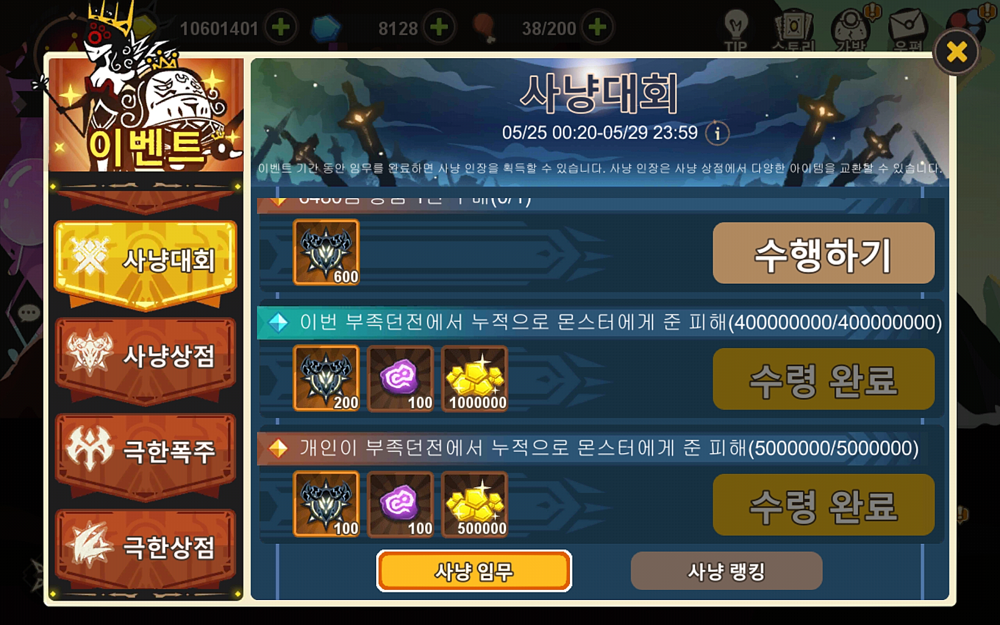
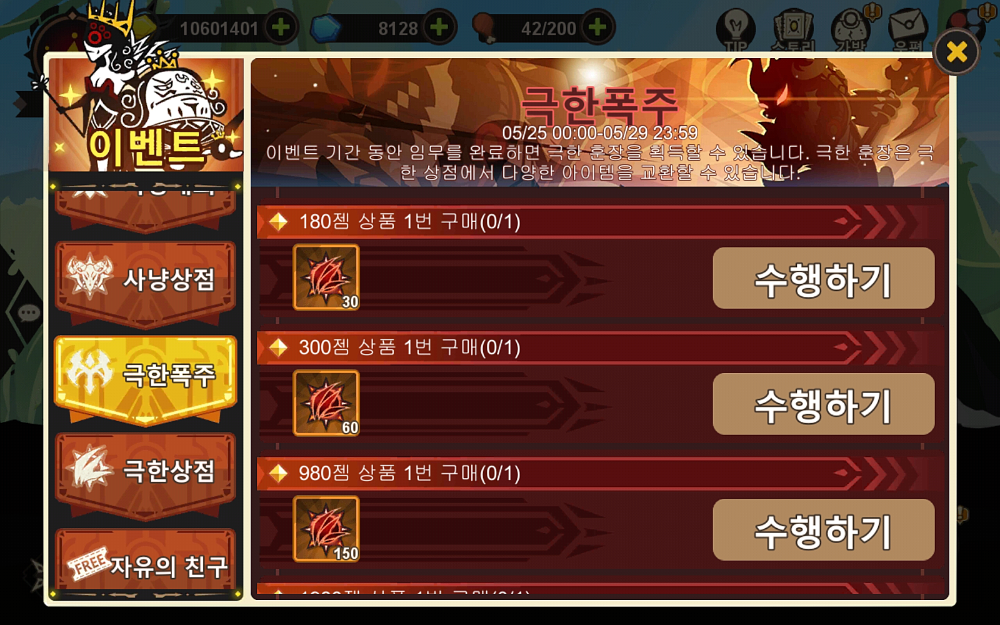

② 컨텐츠 진행 팁
2-1. 유물
투력을 가장 빠르게 올리는 수단 중 하나. 해협이나 부족 지원에서 다른 분 몬스터를 쓸 때도 본인 유물 기준으로 적용되기에 매우 중요합니다.
발굴할 땐 유전자 변이체만 발굴하고, 발굴 중인 화석에 변이체가 없으면
초기화가 무료일 때 초기화하세요.

2-2. 가이아
이 게임에서 가장 중요한 컨텐츠 중 하나. '티끌 모아 태산'이 가장 어울립니다. 3단계 상자가 남아 있어도 초기화 쿨이 돌면 초기화하고, 투력을 꾸준히 올리세요(Z포자 보상이 투력 비례).
스킬 강화 순서: 정밀사격 → 공격 강화 → 수비 강화 → 고속 충돌 → 나머지.
오페라 보유 시 체형 증가를 1순위로. 마지막 에너지 격변은 레벨 최대치가 없어 꾸준히 올려야 합니다.
오페라 보유 시 체형 증가를 1순위로. 마지막 에너지 격변은 레벨 최대치가 없어 꾸준히 올려야 합니다.

2-3. 정글
유물·가이아와 함께 매우 중요한 컨텐츠. 존버덱 구성을 추천합니다. 50젬을 써서 조금이라도 더 밀 수 있다면 쓰는 게 좋고, 버프는 피해 감소를 추천합니다.
2-4. 운명의 문
골드 수급과 1단계 조각·룬을 얻는 컨텐츠. 존버덱이 좋습니다. 10마리 처치마다 문을 고르는데, 아래 몬스터가 나오는 문은 피하세요.
피할 것: 노어 · 철왕룡 · 배히모스 | 1510 처치가 끝입니다.
2-5. 사냥대회
이 게임에서 가장 혜자인 이벤트, 필수입니다. 부족 공헌 미션은 300~500젬 후원까지가 효율이 좋습니다. 부족 던전 처치 미션은 원시 11까지 다 밀어야 깨집니다(표기는 번역 오류).
| 구분 | 품목 |
|---|---|
| 고정 구매 | 태초 각성석, 특수룬, 골드, 오페라 각성석 |
| 남는 자원으로 | 강화포자, 진화포자, 일반룬, 각성석, 수정조각 (필요에 따라) |

2-6. 극한폭주
점수와 참여 횟수(하루 1번만 카운팅)에 따라 보상. 처치 수 × 디버프 개수 = 점수이므로 디버프를 다 채우는 게 핵심입니다.
- 종족 버프 받는 신생 사용 (신생은 재료의 종족 버프를 그대로 받음)
- 디버프 5개 모두 적용 — 무조건
- 피해 상승 버프를 주는 신생 채용 (유무 차이가 큼)
- 진형 내 아군에게도 룬 착용 (귀찮아도 — 공명 비례 추가 버프)
| 구분 | 품목 |
|---|---|
| 고정 구매 | 태초 각성석, 골드, 오페라 각성석 / 스크림 없으면 스크림 수정 고정 |
| 필요에 따라 | 각성석, 강화포자, 디바인, 스팅, Z포자 |

2-7. 무모한 도전
사냥대회와 함께 가장 혜자인 이벤트. 미션으로 이벤트 재화를 얻어 상점에서 아이템을 사는 방식입니다.
| 구분 | 품목 |
|---|---|
| 고정 구매 | 골드, 태각(태초 각성석) |
| 필요에 따라 | 교환수정, 강포, 4단계 스킬강화수정, 카르마 수정조각, 프시케 수정조각 |
2-8. 모험
잼으로 고기를 사서라도 아래는 꼭 해주는 게 좋습니다.
- 스테이지: 75, 82, 103, 114, 122, 124, 128 + Boss 7곳
- 모험일지: 전부 다 돌 것
- 악몽: 1시간 간격으로 생성
- 악몽폭주: 경험치 효율이 가장 좋음 — 무조건 할 것